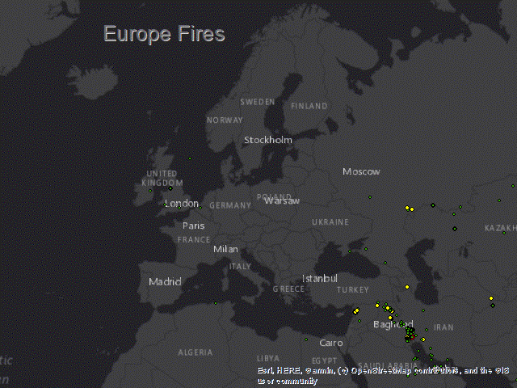
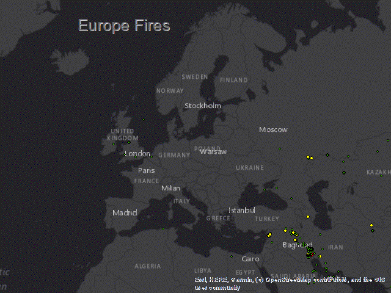

https://github.com/tunstallzs/GIS540/blob/main/Final_Project_1.py

This project aims to visualize change detection of forest fire location on a global scale.
It requires a satellite platform that covers the globe on a daily basis.
The Visible Infrared Imaging Radiometer Suite (VIIRS) sensor on the Suomi-NPP satellite uses a moderate imaging spectroradiometer that provides imagery at 375m resolution.
While this may be considered coarse, it is perfect for capturing the entire globe in a short time span.
The University of Maryland (UM) is responsible for creating an algorithm that is based on NASA's MODIS Fire Detection suite.
UM provides data from the NOAA Satellite platform sensor VIIRS in a tab separated text file format.
This data requires no log in credentials to access and is not specific to any one region. Most importantly, it is updated in “near real time” or on a daily basis.
The text file format of this data makes it perfect to read and write using a python script.
By taking fire detection information as a time series, we can detect when fires are forming, when they are extinguished, and we can identify areas where fires are more prevalent.
 
